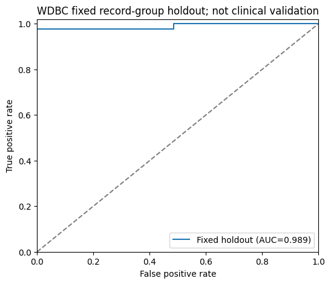

08 · 真实公开表格：固定留出、原生二分类与无标签预测#
本页使用 UCI Breast Cancer Wisconsin (Diagnostic) 的真实 M/B 诊断与30项既有数值测量，DOI：10.24432/C5DW2B，官方来源与CC-BY-4.0许可。署名：Wolberg、Mangasarian、Street等，UCI，1993。
这些测量来自乳腺细针穿刺细胞核图像，不是本包从NIfTI提取的radiomics，也不是现代多中心临床验证队列。本教程不生成诊断、不使用sklearn下载/训练/评价，也不声称外部泛化或诊断效能。原始数据外置缓存；每次完整运行使用新的结果目录。
1. 明确环境、来源与本次输出目录#
Notebook从头到尾直接调用公开API；先看Rust后端和已冻结协议。环境支持 TUTORIAL_REPO_ROOT、TUTORIAL_RUN_ROOT、TUTORIAL_DATA_ROOT 三个可选注入变量；普通交互运行会自动寻找完整仓库并创建新的临时输出目录。
from pathlib import Path
import sys, tempfile, json, hashlib
import numpy as np
import pandas as pd
import matplotlib.pyplot as plt
from IPython.display import display
import ov_radiomics as rad
REPO = Path(TUTORIAL_REPO_ROOT).resolve() if 'TUTORIAL_REPO_ROOT' in globals() else next(
(p for p in [Path.cwd(), *Path.cwd().parents]
if (p / 'examples/real/public_tabular_source.json').is_file()), None)
if REPO is None:
raise RuntimeError('请下载完整源码，并在仓库内启动Notebook。')
output = Path(TUTORIAL_RUN_ROOT) if 'TUTORIAL_RUN_ROOT' in globals() else Path(tempfile.mkdtemp(prefix='radiomics-public-tabular-'))
if 'TUTORIAL_RUN_ROOT' in globals():
output.mkdir(parents=True, exist_ok=False)
facts_path = REPO / 'examples/real/public_tabular_source.json'
facts_bytes = facts_path.read_bytes()
facts = json.loads(facts_bytes)
protocol = facts['protocol']
assert facts['data_kind'] == 'real-public-tabular-no-clinical-validity'
assert rad.backend_info()['metrics_backend'] == 'rust'
from ov_radiomics._backend import resolve_backend
native_path = Path(resolve_backend('rust').__file__)
runtime = {'data_kind': facts['data_kind'], 'backend': rad.backend_info(),
'python': sys.version, 'interpreter': sys.executable,
'native_sha256': hashlib.sha256(native_path.read_bytes()).hexdigest(),
'source_facts_sha256': hashlib.sha256(facts_bytes).hexdigest()}
(output / 'tutorial-runtime.json').write_text(json.dumps(runtime, indent=2), encoding='utf-8')
(output / 'source-facts.json').write_bytes(facts_bytes)
display(protocol)
print('新的输出目录:', output)
{'split_method': 'within each original diagnosis, sort by (SHA256(UTF8(namespace + source_id)), source_id); first floor(0.8*n_class) records train, rest test',
'split_namespace': 'uci-wdbc-holdout-v1|',
'training_fraction': 0.8,
'group_identity': 'one source record ID per group, not independently verified clinical patient linkage',
'task': 'binary',
'classes': ['B', 'M'],
'positive_label': 'M',
'numeric_features': 'all 30 source measurements in declared order; no ID or diagnosis predictor',
'categorical_features': [],
'model': 'LR',
'model_parameters': {'lambda': 0.1,
'tolerance': 1e-10,
'max_iterations': 5000},
'scale': 'standard',
'selection': None,
'outer_cv': 3,
'inner_cv': 2,
'seed': 20261115,
'n_jobs': 1,
'fit_unit': 'sample',
'scoring_unit': 'patient',
'threshold': 0.5,
'ci_method': None,
'test_use': 'held-out evaluation only; never parameter/feature/threshold selection; remove diagnosis for saved-model prediction while retaining test cohort identity',
'clinical_validity_claim': False}
新的输出目录: E:\radiomics-build\public-tabular-v1\execution\08_public_tabular\artifacts
2. 下载/复用原始文件并核验SHA256#
数据为CC-BY-4.0；保留数据署名、许可链接及改动说明，与软件MIT许可分开。官方URL的内容将来可能改变，因此每次读取都校验固定字节数和SHA；不同内容会报错，不改预期来绕过。
这里只导入标准库下载辅助函数，不运行另一份训练脚本。原始 wdbc.data 没有header，第一列为source ID，第二列是真实B/M诊断，后面30列按官方names定义排列。
cache = Path(TUTORIAL_DATA_ROOT) if 'TUTORIAL_DATA_ROOT' in globals() else Path.home() / 'radiomics-tutorial-data' / 'uci-wdbc'
sys.path.insert(0, str(REPO / 'examples/real'))
from download_public_tabular import fetch
fetch(cache)
for name, specification in facts['files'].items():
assert (cache / name).stat().st_size == specification['bytes']
assert hashlib.sha256((cache / name).read_bytes()).hexdigest() == specification['sha256']
features = facts['input']['feature_names']
raw = pd.read_csv(cache / 'wdbc.data', header=None,
names=['source_id', 'diagnosis'] + features,
dtype={'source_id': str, 'diagnosis': str})
assert raw.shape == (569, 32)
assert raw.source_id.notna().all() and raw.source_id.is_unique
assert set(raw.diagnosis) == {'B', 'M'}
assert np.isfinite(raw[features].to_numpy(dtype=float)).all()
display(raw.head())
display(raw.diagnosis.value_counts().rename('source records'))
Source: https://archive.ics.uci.edu/dataset/17/breast+cancer+wisconsin+diagnostic DOI: 10.24432/C5DW2B
Dataset license: CC-BY-4.0 https://creativecommons.org/licenses/by/4.0/
Attribution: Wolberg, W., Mangasarian, O., Street, N., and Street, W. (1993). Breast Cancer Wisconsin (Diagnostic). UCI Machine Learning Repository. https://doi.org/10.24432/C5DW2B
| source_id | diagnosis | radius_mean | texture_mean | perimeter_mean | area_mean | smoothness_mean | compactness_mean | concavity_mean | concave_points_mean | ... | radius_worst | texture_worst | perimeter_worst | area_worst | smoothness_worst | compactness_worst | concavity_worst | concave_points_worst | symmetry_worst | fractal_dimension_worst | |
|---|---|---|---|---|---|---|---|---|---|---|---|---|---|---|---|---|---|---|---|---|---|
| 0 | 842302 | M | 17.99 | 10.38 | 122.80 | 1001.0 | 0.11840 | 0.27760 | 0.3001 | 0.14710 | ... | 25.38 | 17.33 | 184.60 | 2019.0 | 0.1622 | 0.6656 | 0.7119 | 0.2654 | 0.4601 | 0.11890 |
| 1 | 842517 | M | 20.57 | 17.77 | 132.90 | 1326.0 | 0.08474 | 0.07864 | 0.0869 | 0.07017 | ... | 24.99 | 23.41 | 158.80 | 1956.0 | 0.1238 | 0.1866 | 0.2416 | 0.1860 | 0.2750 | 0.08902 |
| 2 | 84300903 | M | 19.69 | 21.25 | 130.00 | 1203.0 | 0.10960 | 0.15990 | 0.1974 | 0.12790 | ... | 23.57 | 25.53 | 152.50 | 1709.0 | 0.1444 | 0.4245 | 0.4504 | 0.2430 | 0.3613 | 0.08758 |
| 3 | 84348301 | M | 11.42 | 20.38 | 77.58 | 386.1 | 0.14250 | 0.28390 | 0.2414 | 0.10520 | ... | 14.91 | 26.50 | 98.87 | 567.7 | 0.2098 | 0.8663 | 0.6869 | 0.2575 | 0.6638 | 0.17300 |
| 4 | 84358402 | M | 20.29 | 14.34 | 135.10 | 1297.0 | 0.10030 | 0.13280 | 0.1980 | 0.10430 | ... | 22.54 | 16.67 | 152.20 | 1575.0 | 0.1374 | 0.2050 | 0.4000 | 0.1625 | 0.2364 | 0.07678 |
5 rows × 32 columns
B 357
M 212
Name: source records, dtype: int64
3. 在训练之前固定按ID的每类80/20划分#
对每个真实诊断类，按 SHA256('uci-wdbc-holdout-v1|' + source_id) 再按source_id排序；前 floor(0.8*n_class) 进入train，其余test。整数取整使比例接近80/20。规则、模型和阈值在计算结果前声明，不为了AUC重挑seed或测试集。
原资料提供唯一记录ID，没有可验证的重复随访/患者链接。本例一source record对应一个本地group ID，交给患者分组API，但这不证明569位独立患者或无隐藏受试者关联。自己的多病灶/多切片数据必须改用真实共享patient_id，不能照抄一行一组。
data = raw.copy()
data['ID'] = 'wdbc:' + data.source_id
data['patient_id'] = data['ID'] # source-record grouping only; not proven clinical linkage
data['split_hash'] = data.source_id.map(lambda identity:
hashlib.sha256((protocol['split_namespace'] + identity).encode('utf-8')).hexdigest())
data['group'] = 'test'
for label in protocol['classes']:
ranked = data.loc[data.diagnosis == label].sort_values(['split_hash', 'source_id'])
count = int(np.floor(protocol['training_fraction'] * len(ranked)))
data.loc[ranked.index[:count], 'group'] = 'train'
assert not set(data.loc[data.group == 'train', 'patient_id']) & set(data.loc[data.group == 'test', 'patient_id'])
split_columns = ['source_id', 'ID', 'patient_id', 'diagnosis', 'split_hash', 'group']
data[split_columns].to_csv(output / 'split-assignments.csv', index=False)
data.to_csv(output / 'study.csv', index=False)
display(data.groupby(['group', 'diagnosis']).size().unstack(fill_value=0))
print('Predictors:', len(features), '; target: diagnosis; source/group IDs excluded')
| diagnosis | B | M |
|---|---|---|
| group | ||
| test | 72 | 43 |
| train | 285 | 169 |
Predictors: 30 ; target: diagnosis; source/group IDs excluded
4. 冻结原生Pipeline与患者组CV#
使用全部30项既有特征、Standard scaling、LR的L2正则lambda=0.1、固定阈值0.5。没有单因素/稀疏筛选、没有多模型或参数网格搜索。填补/缩放仍由Rust在训练折拟合；test特征/诊断均不参与训练统计。只有一个候选时内层计划保留，但不会伪造候选选择分数或执行无意义调参。
外层3折、内层2折，固定seed。训练类顺序B/M，M为阳性。不要用测试标签选择特征或阈值。
plan = rad.SplitPlan.from_data(
data, 'diagnosis', task='binary', classes=protocol['classes'],
id_col='ID', patient_id='patient_id', split='group',
outer_cv=protocol['outer_cv'], inner_cv=protocol['inner_cv'], seed=protocol['seed'])
result = rad.train_models(
data, 'diagnosis', features, task='binary', classes=protocol['classes'],
positive_label=protocol['positive_label'], models=[protocol['model']],
model_params={protocol['model']: protocol['model_parameters']},
scale=protocol['scale'], selector=None, categorical=[], backend='rust',
split_plan=plan, id_col='ID', patient_id='patient_id', split='group',
cv=protocol['outer_cv'], inner_cv=protocol['inner_cv'], random_state=protocol['seed'],
fit_unit=protocol['fit_unit'], scoring_unit=protocol['scoring_unit'],
threshold=protocol['threshold'], n_jobs=protocol['n_jobs'])
result.save(output / 'training')
result.models['LR'].save(output / 'model.rad')
display(result.cv_results)
print('SplitPlan SHA256:', result.split_plan.fingerprint)
| model | fold | score | auc | |
|---|---|---|---|---|
| 0 | LR | 0 | 0.995014 | 0.995014 |
| 1 | LR | 1 | 0.997368 | 0.997368 |
| 2 | LR | 2 | 0.994925 | 0.994925 |
SplitPlan SHA256: 44d8616dd2d1657a24ef0a897310bef1a333b47e42b1daa2a115b18fd8b38cfc
5. 分开查看OOF与固定留出结果#
train最终预测是表观值；OOF由排除该组的外层模型生成，test则来自最终模型并保持独立留出身份。这里CI=None；AUC只是此数据、此固定划分的区分能力，不能解释成真实部署诊断概率或多中心临床泛化。
源ID分组一行一组，因此本页API中的patient评价单位等同源记录单位；真实患者级结论需要另外的链接证据。
metrics = rad.evaluate(result, backend='rust', prediction_unit='patient', ci_method=None)
run = result.to_dict()['models'][0]
oof = rad.PredictionTable(run['oof'])
oof_metrics = rad.evaluate(oof, data=data, target='diagnosis', threshold=protocol['threshold'],
backend='rust', prediction_unit='patient', ci_method=None)
metrics.to_csv(output / 'cohort-metrics.csv', index=False)
oof_metrics.to_csv(output / 'oof-metrics.csv', index=False)
display(metrics)
display(oof_metrics)
held = rad.PredictionTable(run['predictions']).aggregate_patients().dataframe
held = held.loc[held.group == 'test'].merge(
data[['patient_id', 'diagnosis']], on='patient_id', validate='one_to_one')
ax = rad.plot_roc((held.diagnosis == 'M').astype(int), {'Fixed holdout': held.probability},
backend='rust', title='WDBC fixed record-group holdout; not clinical validation')
ax.figure.savefig(output / 'holdout-roc.png', dpi=150, bbox_inches='tight')
plt.show()
| model | group | task | prediction_unit | n | prediction_type | positive_n | threshold | accuracy | auc | ... | precision | recall | f1 | brier | log_loss_eps1e15 | average_precision | pr_auc_trapezoidal | ci_low | ci_high | status | |
|---|---|---|---|---|---|---|---|---|---|---|---|---|---|---|---|---|---|---|---|---|---|
| 0 | LR | test | binary | patient | 115 | holdout | 43 | 0.5 | 0.965217 | 0.988695 | ... | 1.000000 | 0.906977 | 0.951220 | 0.033970 | 0.146972 | 0.989565 | 0.989497 | NaN | NaN | evaluated |
| 1 | LR | train | binary | patient | 454 | apparent | 169 | 0.5 | 0.964758 | 0.996657 | ... | 0.993548 | 0.911243 | 0.950617 | 0.032206 | 0.133822 | 0.995062 | 0.995049 | NaN | NaN | evaluated |
2 rows × 24 columns
| model | group | task | prediction_unit | n | prediction_type | positive_n | threshold | accuracy | auc | ... | precision | recall | f1 | brier | log_loss_eps1e15 | average_precision | pr_auc_trapezoidal | ci_low | ci_high | status | |
|---|---|---|---|---|---|---|---|---|---|---|---|---|---|---|---|---|---|---|---|---|---|
| 0 | Model | train | binary | patient | 454 | oof | 169 | 0.5 | 0.962555 | 0.995931 | ... | 0.993506 | 0.905325 | 0.947368 | 0.033673 | 0.136847 | 0.994079 | 0.994064 | NaN | NaN | evaluated |
1 rows × 24 columns

6. 移除真实标签，再从.rad加载预测#
这里用同一固定test数据演示无标签预测，不把它改称独立外部队列。删除diagnosis，保留原test和source/group身份。保存的填补/缩放/模型/阈值被复用，不对test重新拟合。若真正的新队列有不同样本/患者，准备显式external名称和相同特征定义。
unlabeled = data.loc[data.group == 'test'].drop(columns='diagnosis').copy()
unlabeled.to_csv(output / 'holdout-unlabeled.csv', index=False)
restored = rad.load_model(output / 'model.rad')
before = result.predict(unlabeled, model='LR')
after = restored.predict(unlabeled, id_col='ID', patient_id='patient_id', split='group')
assert before.to_dict() == after.to_dict()
after.dataframe.to_csv(output / 'holdout-loaded-predictions.csv', index=False)
display(after.dataframe.head())
print('保存/加载后无标签预测逐结构一致:', len(after.dataframe), 'records')
| ID | patient_id | slide_id | tile_id | model | group | fold | prediction_unit | prediction_type | training_source | probability::B | probability::M | probability | |
|---|---|---|---|---|---|---|---|---|---|---|---|---|---|
| 0 | wdbc:84300903 | wdbc:84300903 | None | None | Model | test | None | sample | holdout | final:83a1f6b0556d9c7eb73f0e4cdca912b1de09f259... | 0.005949 | 0.994051 | 0.994051 |
| 1 | wdbc:84501001 | wdbc:84501001 | None | None | Model | test | None | sample | holdout | final:83a1f6b0556d9c7eb73f0e4cdca912b1de09f259... | 0.026347 | 0.973653 | 0.973653 |
| 2 | wdbc:845636 | wdbc:845636 | None | None | Model | test | None | sample | holdout | final:83a1f6b0556d9c7eb73f0e4cdca912b1de09f259... | 0.472116 | 0.527884 | 0.527884 |
| 3 | wdbc:846226 | wdbc:846226 | None | None | Model | test | None | sample | holdout | final:83a1f6b0556d9c7eb73f0e4cdca912b1de09f259... | 0.021341 | 0.978659 | 0.978659 |
| 4 | wdbc:84667401 | wdbc:84667401 | None | None | Model | test | None | sample | holdout | final:83a1f6b0556d9c7eb73f0e4cdca912b1de09f259... | 0.113944 | 0.886056 | 0.886056 |
保存/加载后无标签预测逐结构一致: 115 records
7. 保存来源、改动和运行证据#
保留原始数据署名、许可和每个源文件SHA；声明本教程只是列命名、按ID划分和原生模型使用示例。结果目录保留完整划分表、模型、OOF/队列预测和图，不仅是一张AUC截图。下面receipt是执行证据，不是新的Golden期望。
换成自己的CSV/Parquet时使用明确列角色的文件工作流和输入契约。自己的真实结局、重复患者链接、中心与采集时间必须重新声明；不要从本例生成伪患者或标签。
(output / 'DATA_NOTICE.md').write_text((cache / 'NOTICE.md').read_text(encoding='utf-8'), encoding='utf-8')
receipt = dict(
schema='radiomics.public-tabular-tutorial.v1', data_kind=facts['data_kind'],
status='passed', source_doi=facts['doi'], license=facts['license'],
source_facts_sha256=runtime['source_facts_sha256'], protocol=protocol,
input_sha256={name: hashlib.sha256((cache / name).read_bytes()).hexdigest() for name in facts['files']},
runtime=runtime, records=len(data), predictors=len(features),
cohorts={name: int(count) for name, count in data.group.value_counts().items()},
classes=protocol['classes'], positive_label=protocol['positive_label'],
split_plan_sha256=result.split_plan.fingerprint,
split_table_sha256=hashlib.sha256((output / 'split-assignments.csv').read_bytes()).hexdigest(),
save_load_predictions_exact=True, clinical_validity_claim=False,
table_adaptation='Only column names, preserved source IDs, explicit source-record group IDs, and declared fixed split; no invented diagnosis',
outputs={name: hashlib.sha256((output / name).read_bytes()).hexdigest() for name in
['model.rad', 'cohort-metrics.csv', 'oof-metrics.csv', 'holdout-roc.png', 'holdout-loaded-predictions.csv']})
(output / 'receipt.json').write_text(json.dumps(receipt, indent=2, ensure_ascii=False), encoding='utf-8')
print('结果文件:', [path.name for path in sorted(output.iterdir())])
结果文件: ['cohort-metrics.csv', 'DATA_NOTICE.md', 'holdout-loaded-predictions.csv', 'holdout-roc.png', 'holdout-unlabeled.csv', 'model.rad', 'oof-metrics.csv', 'receipt.json', 'source-facts.json', 'split-assignments.csv', 'study.csv', 'training', 'tutorial-runtime.json']